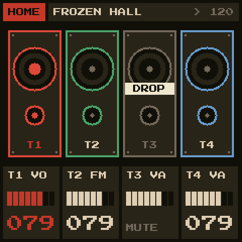
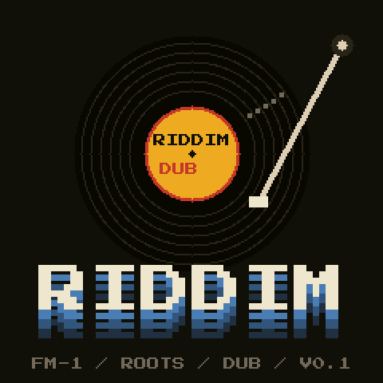
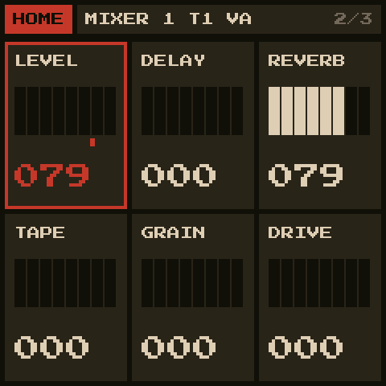

Seu primeiro guia: ligar, tocar o kit, montar um one drop e fazer o dub — passo a passo, sem pressa.
Firmware de reggae roots para o M-VAVE FM-1 · versão 0.1 (em desenvolvimento: a bateria está aqui, a banda e a mesa de dub vêm depois)
RIDDIM · Guia de primeiros passossaulofilho.github.io/riddim-fm1 · 1/8
ONDE FICA CADA COISA
O aparelho num relance
O FM-1 tem quatro knobs à esquerda, quatro em cima, uma grade de botões e 27 teclas. No RIDDIM eles fazem isto:
MASTER
SELECT
PRESETS
ALGORITHM

FXSELENVLFOEDITGLOHOMESAVEARPSEQPLAYRECOCT−OCT+
K1
K2
K3
K4
MASTER
o volume
SELECT
o tempo na HOME; o cursor no sequenciador
PRESETS
o próximo som (no SEQ: o tempo)
ALGORITHM
escolhe a trilha, T1 a T4
KNOB 1–4
os quatro valores embaixo da tela
OCT− / OCT+
oitava; voltar / confirmar nos menus
os botões
um toque abre uma página, outro a seguinte; segure para o combo
as 27 teclas
tocam a trilha; numa trilha DRUM cada tecla é um tambor
RIDDIM · Guia de primeiros passossaulofilho.github.io/riddim-fm1 · 2/8
LIGAR E TOCAR EM UM MINUTO
Primeiros passos
Ligue o FM-1 a um fone ou caixa e ligue o aparelho. Um disco gira na tela, o braço desce e o nome ecoa: é o RIDDIM.
Gire o MASTER até um volume confortável e aperte uma tecla: você ouve a trilha selecionada.
Gire o ALGORITHM para passar pelas quatro trilhas, T1 a T4. A HOME mostra as quatro como caixas de som; os cones empurram quando a trilha toca.
Gire o PRESETS para trocar o som da trilha. Os nove kits de bateria estão na categoria DRUMS (PRESETS 31 a 39).
Gire o SELECT na HOME para o tempo. O reggae roots fica por volta de 72–80 BPM.
Não se preocupe em salvar: quando você para e deixa o aparelho um instante, o RIDDIM guarda tudo.

BOOT
HOME
RIDDIM · Guia de primeiros passossaulofilho.github.io/riddim-fm1 · 3/8
UMA BATERIA ROOTS NAS TECLAS
Toque o kit
Gire o PRESETS até o ONE DROP KIT. Agora cada tecla é um tambor, igual em qualquer oitava. A página DRUM (EDIT) desenha o kit e acende a peça tocada.
F3 KICK
F#3 HAT
G3 CROSS
G#3 PEDAL HAT
A3 SNARE
A#3 OPEN HAT
B3 RIMSHOT
C4 TOM LO
C#4 SHAKER
D4 TOM MID
D#4 COWBELL
E4 TOM HI
F4 STEP KICK
F#4 WOOD
G4 SYNDRUM
G#4 SYN HI
A4 SYN LO
A#4 STICKS
B4 SPRING
C5 FLOOR TOM
C#5 CROSS HI
D5 TIMBALE
D#5 RIDE
E5 CRASH
F5 DUB KICK
F#5 SNARE HI
G5 SPRING HI
Tente o one drop: toque o HAT (F#3) em cada colcheia e, no tempo 3, o KICK (F3) e o CROSS (G3) juntos. Nada no tempo 1: esse é o drop.
HATKICKCROSS
Em EDIT › SOUND: KIT (STUDIO, YARD, DUB, STEPPERS) · TUNE · DECAY · HUMAN (o baterista atrás do tempo).
EDIT › SOUND · DRUM
RIDDIM · Guia de primeiros passossaulofilho.github.io/riddim-fm1 · 4/8
O SEQUENCIADOR, TRÊS TRILHAS
Monte um one drop
Um passo guarda uma nota por trilha, então a batida vai em três trilhas, cada uma com o ONE DROP KIT. Uns três minutos.
Na HOME, SELECT em 76 BPM. Ponha o ONE DROP KIT em T1, T2 e T3 (ALGORITHM, depois PRESETS).
T1, os chimbais. Aperte SEQ (a grade) e depois REC. Aperte HAT: ele grava o passo 1 e vai para o 2. Gire o SELECT um passo, aperte HAT de novo; e assim por diante: passos 1, 3, 5 … 15.
T2, o bumbo. ALGORITHM em T2. Na grade com REC ligado, gire o SELECT até o passo 9 e aperte KICK.
T3, o cross-stick. ALGORITHM em T3, SELECT no passo 9, aperte CROSS. Aperte REC de novo para parar de gravar.
Aperte PLAY. Esse é o one drop. Para o balanço: SEQ de novo (PATTERN SETTINGS), suba um pouco o SWING em cada trilha.
Errou? Segure EDIT e aperte OCT− para desfazer.
SEQ › GRID
T1 HATT2 KICKT3 CROSS
RIDDIM · Guia de primeiros passossaulofilho.github.io/riddim-fm1 · 5/8
OS MOVIMENTOS DO ENGENHEIRO
Faça o dub
Eco no cross-stick. Na T3, aperte HOME duas vezes (MIXER 1), gire o SELECT até o quadro DELAY e suba o KNOB 1.
Molde o eco. Aperte FX até DELAY: TIME numa colcheia pontuada, FEEDBACK passando do meio, WEAR para uma fita mais escura.
Jogue. Segure FX e segure A3 (ECHO THROW): tudo vai para o eco enquanto você segura; solte e a cauda continua.
Tire a banda. Segure GLO e toque F3–B3 para mutar T1–T4 (C4–F4 para solo). Na HOME a caixa muda leva DROP.
Varra. FX até MASTER: TYPE HP ou LP, gire o CUTOFF devagar. Segure FX + D4 / E4 para o filtro descer / subir rápido.
A reverb de mola, o throw por trilha e o VERSION, o dub que se mixa sozinho, vêm nas próximas versões.

HOME › MIXER 1
FX (HOLD) › PERFORM
RIDDIM · Guia de primeiros passossaulofilho.github.io/riddim-fm1 · 6/8
UM TOQUE, E SEGURAR
Os botões
Botão
Um toque
Segurar
HOME
HOME, MIXER 1, MIXER 2
ajustes do SYSTEM
EDIT
SOUND, SOURCE (FM, PHASE: mais)
com OCT−/OCT+: desfazer / refazer
SEQ
GRID, PATTERN SETTINGS
+ tecla branca: ferramentas; + SELECT: tamanho
PLAY
toca / para
REC
grava no padrão
~1 s: apaga o padrão da trilha
FX
TAPE, GRAIN, DELAY, SPACE, MASTER, DRIVE
PERFORM: throws, stutter, filtro; GENERATE
SEL
SCALE, CHORD
sozinho: modo acorde; + OCT+: LATCH
ENV / LFO
o envelope / LFO da trilha
ARP
o arpejador
sozinho: liga / desliga
SAVE
SOUNDS, PROJECTS
+ C4–F4: salva A–D; + F3–B3: chama
GLO
SONG
+ F3–B3: muta T1–T4; + C4–F4: solo
RIDDIM · Guia de primeiros passossaulofilho.github.io/riddim-fm1 · 7/8
27 TECLAS, NOVE KITS
O kit, e a cola
Tecla
Tambor
F3
KICK
F#3
HAT
G3
CROSS
G#3
PEDAL HAT
A3
SNARE
A#3
OPEN HAT
B3
RIMSHOT
C4
TOM LO
C#4
SHAKER
D4
TOM MID
D#4
COWBELL
E4
TOM HI
F4
STEP KICK
F#4
WOOD
Tecla
Tambor
G4
SYNDRUM
G#4
SYN HI
A4
SYN LO
A#4
STICKS
B4
SPRING
C5
FLOOR TOM
C#5
CROSS HI
D5
TIMBALE
D#5
RIDE
E5
CRASH
F5
DUB KICK
F#5
SNARE HI
G5
SPRING HI
KITS: ONE DROP · ROCKERS · STEPPERS · DUB · RUB-A-DUB · ROCKSTEADY · DEEP ROOTS · TIGHT · BOOMY
Ele salva sozinho quando você para e deixa ~2,5 s. Slots A–D: segure SAVE + C4–F4 para salvar, + F3–B3 para chamar.
Mais: o manual, o editor, o emulador web e a visão ao vivo em saulofilho.github.io/riddim-fm1. Ainda não testado num FM-1: leia o README antes de instalar.
RIDDIM · Guia de primeiros passossaulofilho.github.io/riddim-fm1 · 8/8